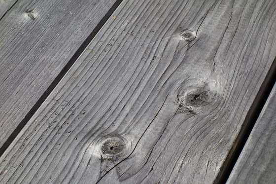
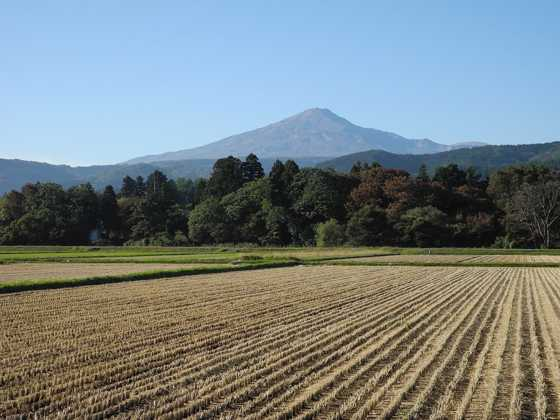
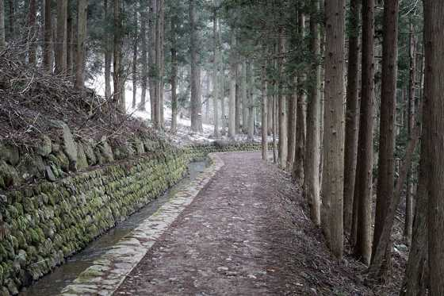
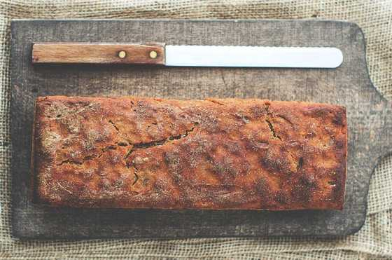
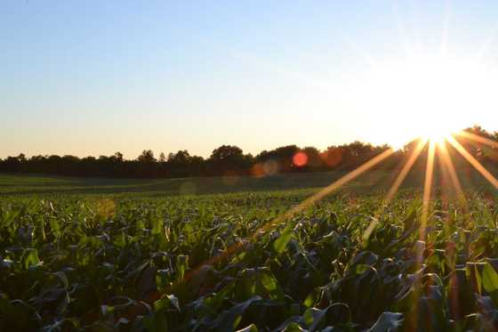
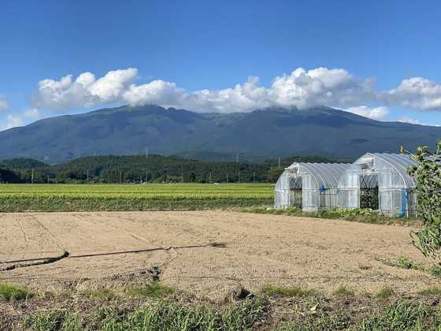

栃木県塩谷郡塩谷町
お米の粒から、小麦を使わないやさしいパンを。

小麦を使わないパンと聞いて試してみました。もちっとしていて、やさしい味でした。
イメージ例(創作・実在の声ではありません)売り切れ前に行きたくて、朝のうちに寄りました。お米の風味が感じられるパンでした。
イメージ例(創作・実在の声ではありません)体調を気にする家族にも安心して選べるパンがあるのは助かります。
イメージ例(創作・実在の声ではありません)Instagramでは、「生米から作るお米のパン屋です」と紹介されています。グルテンフリーのパンや、生米から作るマフィンなどを手がけているお店です。
栃木ナビの掲載情報では、小麦・卵・牛乳・バターを使わないパンとして紹介されており、アレルギーのある方にも食べやすいよう考えられているとされています。
営業日はInstagramで「金〜日 9時〜16時(売り切れ次第終了)」と案内されています。変更される場合があるため、最新情報は店舗にご確認ください。



住所: 〒329-2226 栃木県塩谷郡塩谷町芦場新田87
電話: 準備中
営業時間・定休日: 準備中(Instagramをご確認ください)


掲載の写真はフリー素材(Wikimedia Commons)のイメージで、お店の商品・店内・周辺の実際の様子ではありません。海外や他の地域で撮影された写真、撮影地が不明な写真を含みます。写真は縮小・トリミングして掲載しています。
出典はいずれも Wikimedia Commons。詳細は制作メモに記録しています。